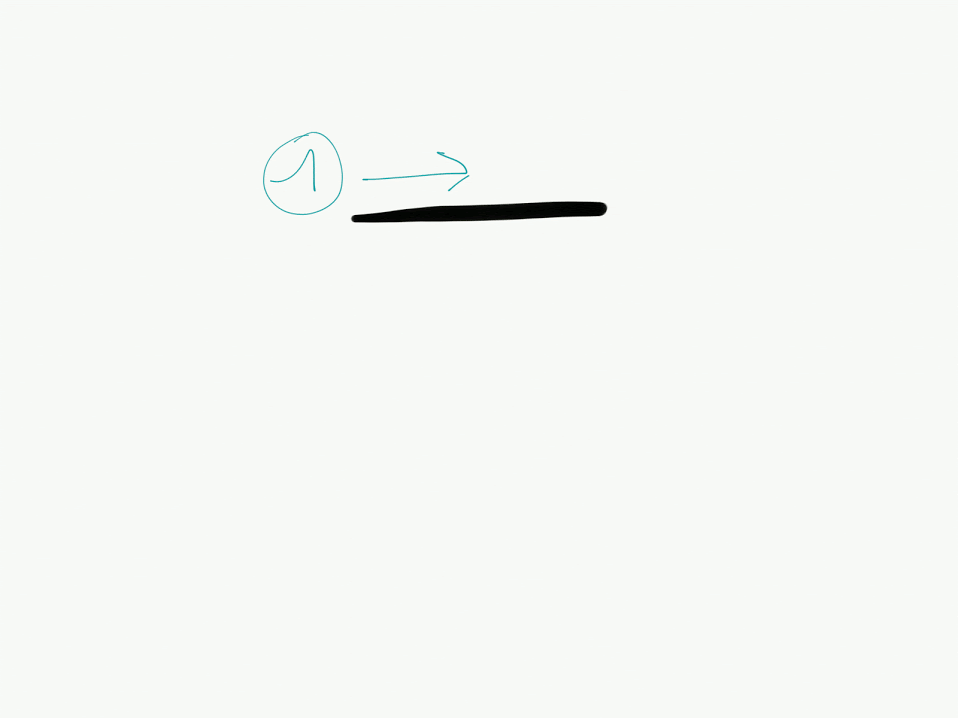
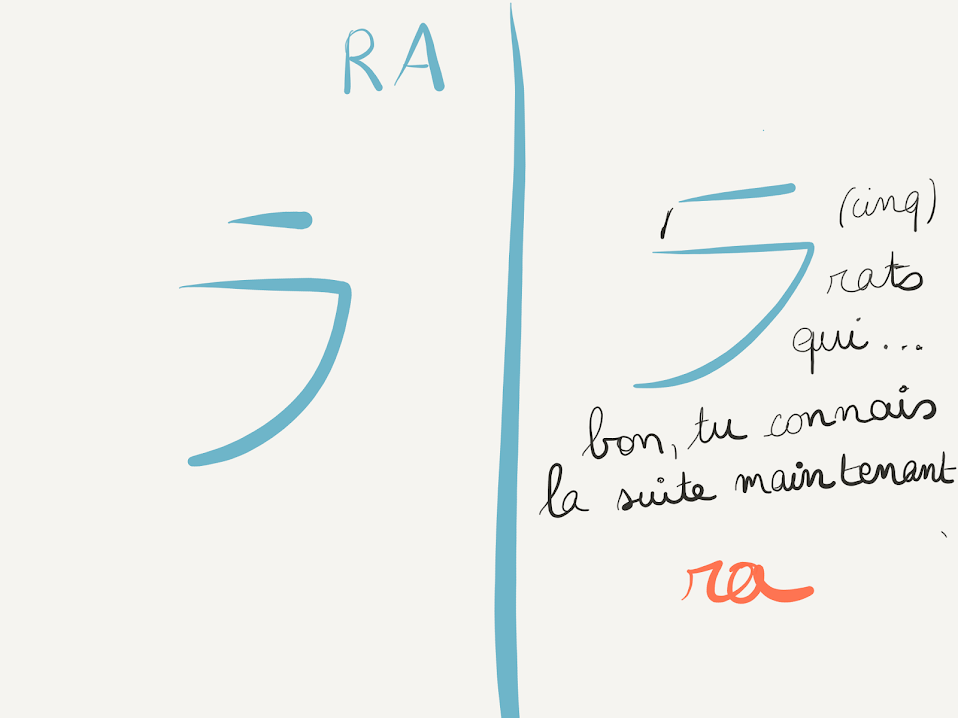
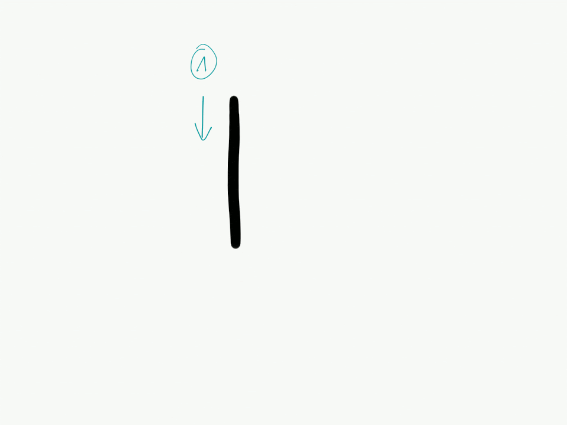
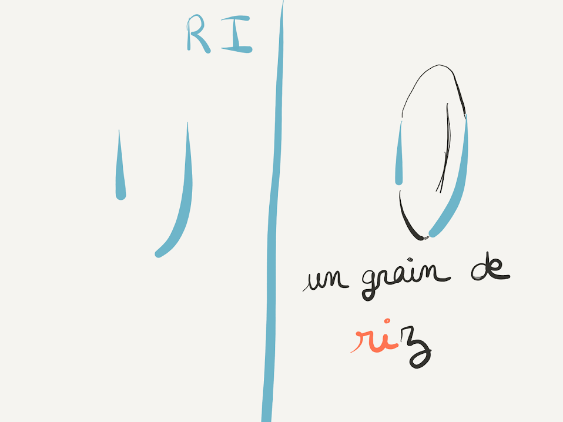
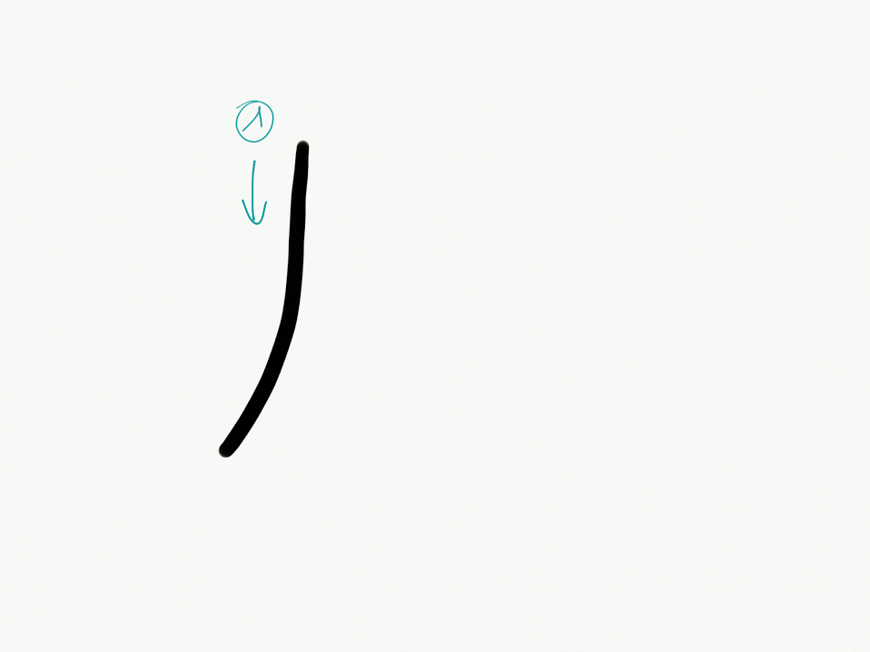
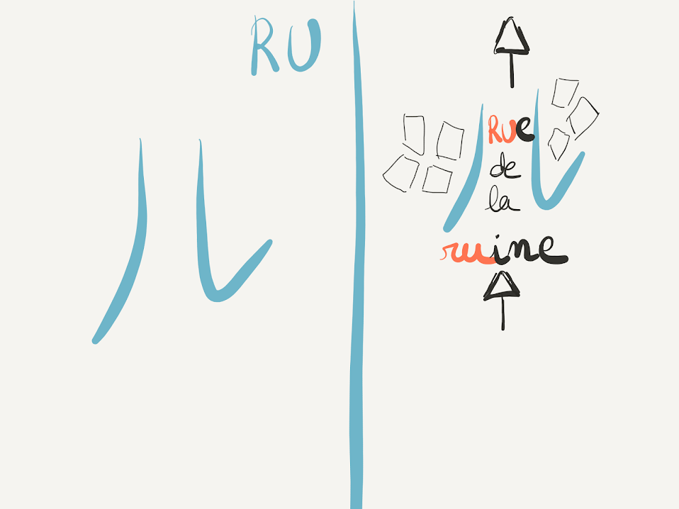
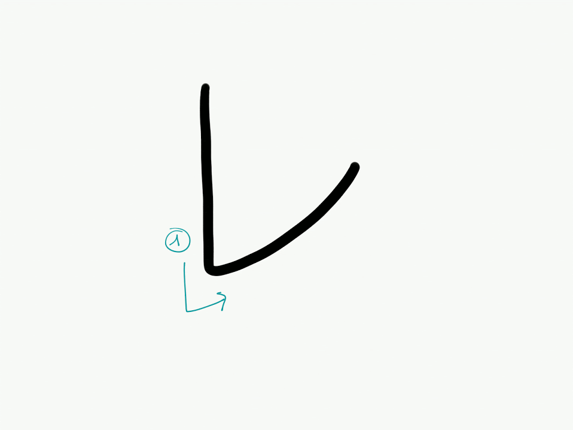
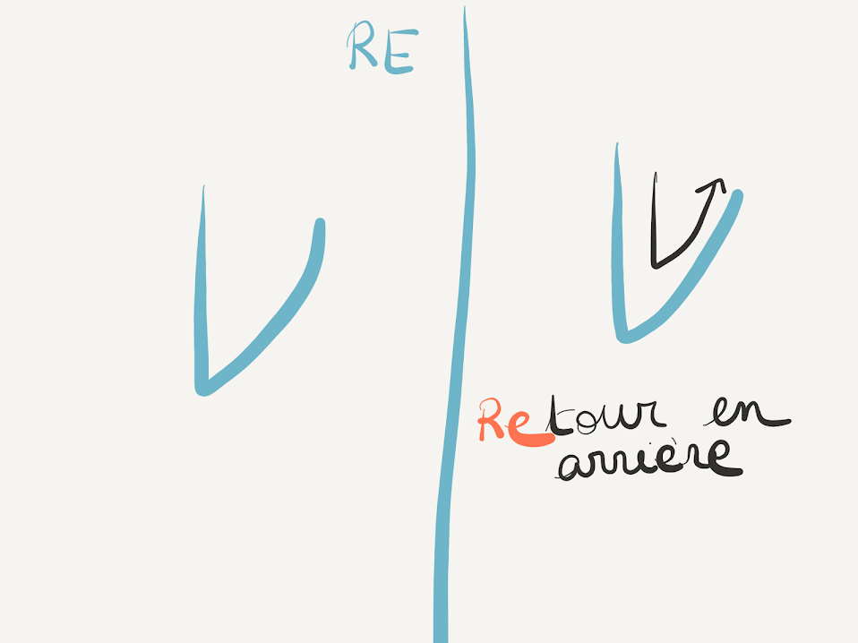
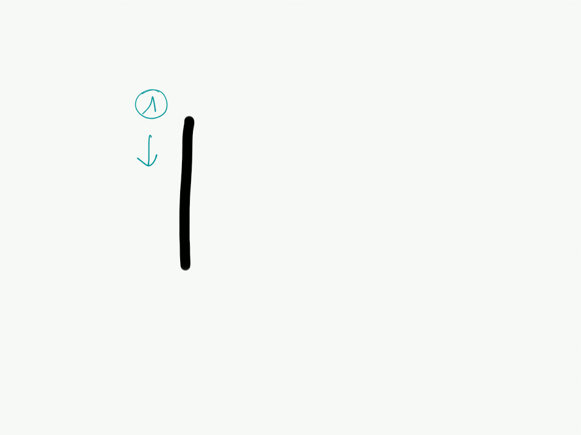
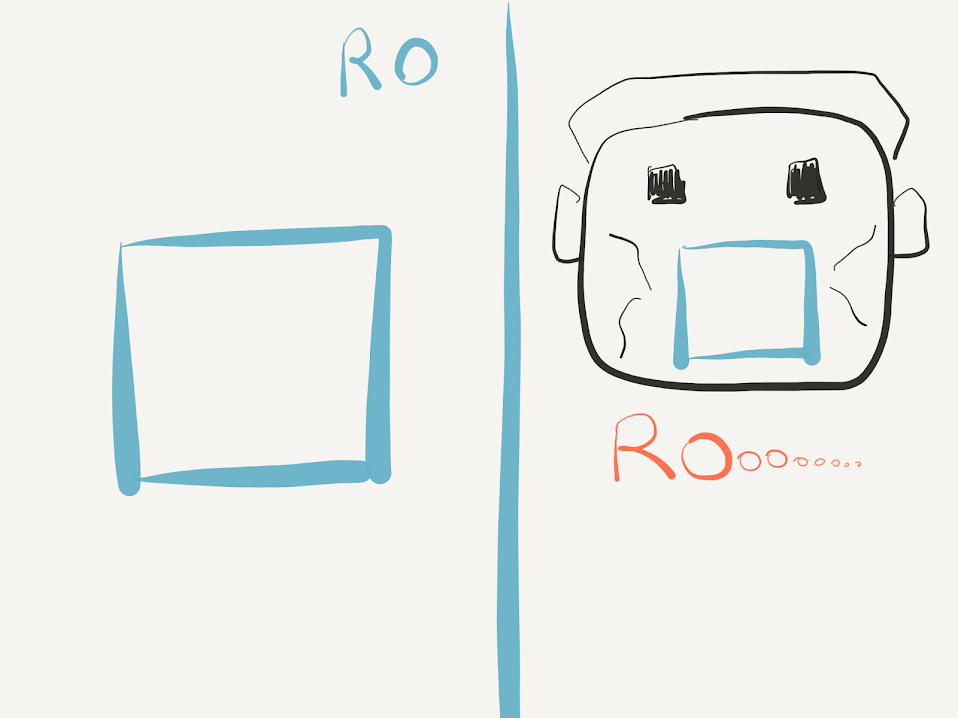

Les katakana ラ、リ、ル、レ、ロ
Hey ! On en voit bientôt le bout, voici la ligne des « r »: ラ、リ、ル、レ、ロ。
Le katakana ラ
Ce caractère correspond à la syllabe ra (prononcer [la]).
Il se compose de 2 traits. Le premier est horizontal. Le second démarre aussi horizontalement, mais revient vers la gauche en formant une courbe.

On peut ici de nouveau penser aux petits rats (comme pour le hiraganaら (ici). En effet, si l’on relie les deux traits, on peut voir apparaître le chiffre 5. 5 rats qui te chient dessus…

Le katakana リ
Ce kana correspond à la syllabe ri (prononcer [li]).
Il se compose de 2 traits verticaux quasi parallèles.

Comme pour le hiragana り, il suffit de penser à un grain de riz !

Le katakana ル
Ce caractère correspond à la syllabe ru (prononcer presque [lou]).
Il se compose de 2 traits verticaux quasi parallèles, sauf que le second bifurque vers la droite en remontant.

Ici, je vois la voie centrale d’une rue. Le mot « rue » commence par la bonne syllabe, même si elle ne se prononce pas de la même manière en japonais.

Le katakana レ
Ce caractère correspond à la syllabe re (prononcer [lé]).
Il se compose d’un seul trait vertical qui bifurque à droite en remontant.

Le chemin que prend le trait du tracé de ce kana, le retour en arrière, me permet de me souvenir ! En effet, dans le mot « retour », il y a la syllabe re, même si elle ne se prononce pas comme cela en japonais.

Le katakana ロ
Ce kana correspond à la syllabe ro (prononcer [lo]).
Il se compose de 3 traits rectilignes. Le premier part du haut et descend verticalement. Le second part du même point que le premier, commence horizontalement puis tourne à angle droit pour descendre verticalement. Le dernier relie le premier et le deuxième tout en étant parallèle à la première partie du deuxième trait. Le tout forme une sorte de carré.

Ce gros carré est comme une bouche grande ouverte qui rote. Dans « roter » il y a la syllabe ro !
